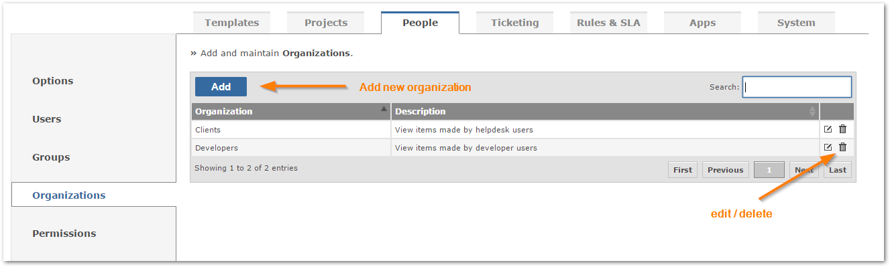
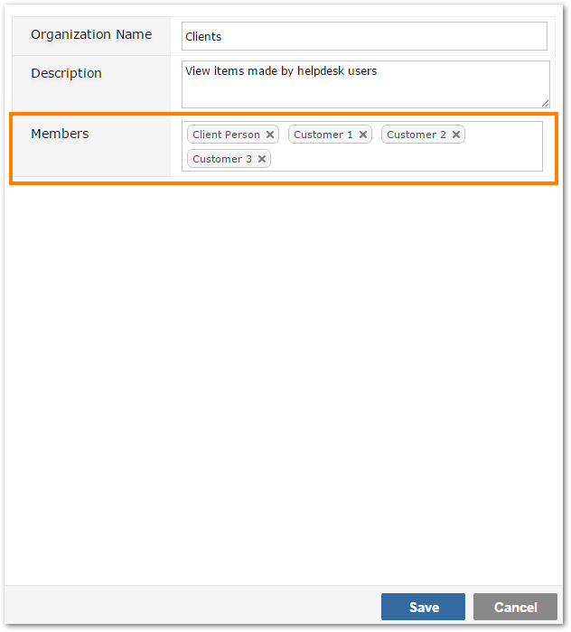
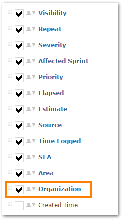
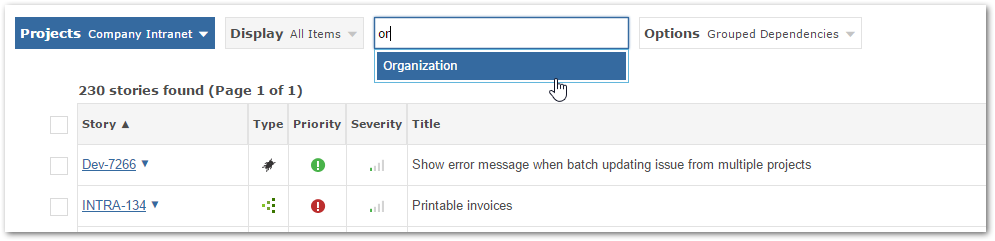

Users can be grouped into Organizations to allow them to view that organization's items. You can allow the organization users to only view their organization's items via permissions.

When editing a Organization set, you can also select the users that belongs to the organization.

NoteThis should be done to users who belong to multiple organization so they can filter items for a single organization.
Ensure that the Organization Field is visible for those processes that you wish to associate with the Organization permissions.
Select the screen option (viewing section) for the Process that you want to associate with Organization.

Verify that on the items grid page you can see the Organization in the filter drop down
